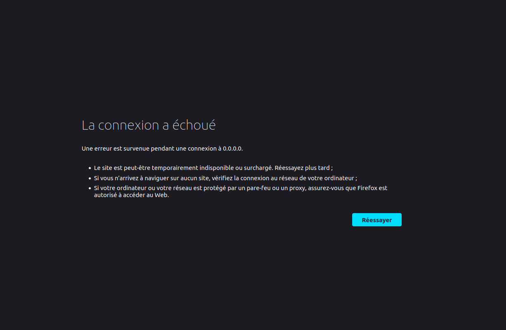
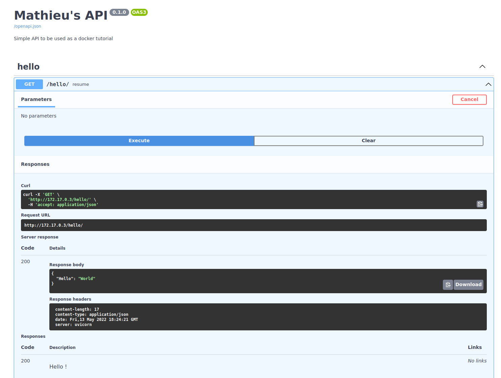

Docker for the absolute beginner
Survol
Que sont les conteneurs Docker ? Un conteneur est un environnement informatique complètement isolé :
- il a son propre réseau,
- il a ses propres processus,
- il a ses propres volumes montés,
tout comme des machines virtuelles. Vraiment ? Pas vraiment, la différence majeure avec une machine virtuelle est que tous les conteneurs d'un même système partagent le même kernel.
Les OS Linux (Ubuntu, Fedora, CentOS, etc) sont tous basés sur le même socle : ils possède un noyau (le kernel Linux) qui est responsables de l'interaction avec le hardware, et un ensemble de softwares.
Le kernel Linux reste le même peu importe la distribution, c'est la collection de softwares présents qui rend Ubuntu différent de Fedora, CentOS, etc.
Donc lorsque l'on dit que l'ensemble des conteneurs partagent le même kernel, on veut dire par là que Docker utilise directement le noyau de l'hôte sur lequel il tourne en faisant abstraction de la couche software. Les conteneurs peuvent donc faire tourner n'importe quel software ou OS tant qu'il est basé sur le même noyau Linux que l'hôte.
Attention
Quel OS n'est pas basé sur un noyau Linux ? Windows.
Cela veut donc dire que Docker ne pourra pas faire tourner des conteneurs avec un OS/software Windows sur un hôte Linux, et inversement. Il faudra un serveur avec Windows Server pour faire tourner des conteneurs windows.
Attention
Si vous connaissez Docker, vous allez surement surement dire que c'est faux. Vous pouvez très bien installer Docker sur Windows, lancer un conteneur Ubuntu et travailler dedans sans soucis.
La différence est que le conteneur Ubuntu ne tourne pas directement sur windows, comme sur un OS Linux classique, windows lance d'abord une VM Linux et ce conteneur va alors tourner à l'intérieur de la VM Linux, ce qui rajoute une couche supplémentaire par rapport à Docker sur un OS Linux classique.
Les environnements "conteneurisés"
Un conteneur Docker a la même idée qu'un conteneur physique : pensez-y comme à une boîte contenant une application.
À l'intérieur de la boîte, l'application semble avoir un ordinateur à elle toute seule : elle a son propre nom de machine et sa propre adresse IP, et elle a aussi son propre disque (les conteneurs Windows ont aussi leur propre registre Windows).
Ces éléments sont tous des ressources virtuelles :
- le nom d'hôte,
- l'adresse IP,
- le système de fichiers sont créés par Docker.
Ce sont des objets logiques qui sont gérés et créés par Docker, et ils sont tous réunis pour créer un environnement dans lequel une application peut s'exécuter. C'est la "boîte" du conteneur.
L'application à l'intérieur du conteneur ne peut rien voir à l'extérieur du conteneur, mais le conteneur est exécutée sur un ordinateur, et cet ordinateur peut également exécuter de nombreux autres conteneurs. Les applications dans ces conteneurs ont leurs propres environnements distincts (gérés par Docker), mais elles partagent toutes le CPU, GPU, et la mémoire de l'ordinateur, et elles partagent toutes le système d'exploitation de l'ordinateur.
Remarque
Notez ici que les conteneurs sont différents des machines virtuelles.
-
Les machines virtuelles nécessitent que l'hyperviseur virtualise une pile matérielle complète. Il y a également plusieurs systèmes d'exploitation invités, ce qui les rend plus grands et plus étendus à démarrer. C'est ce que sont les instances de cloud AWS/GCP/Azure.
-
Les conteneurs, quant à eux, ne nécessitent aucune virtualisation de l'hyperviseur ou du matériel. Tous les conteneurs partagent le même noyau hôte. Ils existent comme des environnements d'espace utilisateur isolés et dédiés, ce qui les rend beaucoup plus petits en taille et plus rapides à démarrer.
Les conteneurs font tourner des instances "d'images" définies chacunes par un Dockerfile.
TLDR
- Un Dockerfile définit comment construire une image.
- Une image est un environnement packagé contruit par un Dockerfile.
- Le conteneur Docker est l'endroit où l'image est lancée.
Docker possède une api qui lui est propre et qui permet de lancer, gérer, stopper des conteneurs, avant de voir la rédaction d'un Dockerfile, voyons les commandes de base de cette api.
Les commandes de base
| Commande | Résultat | Exemple |
|---|---|---|
docker run image_name |
lance un conteneur portant le nom image_name |
docker run ubuntu |
docker ps |
liste l'ensemble des conteneurs lancés | |
docker ps -a |
liste l'ensemble des conteneurs présents sur l'hôte, qu'ils soient lancés ou non. | |
docker stop container_id ou docker stop container_name |
stoppe le conteneur avec l'id ou le nom associé. | docker stop 57ff613a495d docker stop blissful_leakey |
docker rm container_name |
supprime un conteneur stoppé | docker rm blissful_leakey |
docker images ou docker image ls |
liste l'ensemble des images présentes sur l'hôte | |
docker rmi image_name |
supprime localement l'image | docker rmi ubuntu |
docker pull image_name |
télécharge l'image depuis le registre associé sans la lancer | docker pull ubuntu |
docker exec container_name command |
exécute une commande à l'intérieur d'un conteneur lancé | docker exec pedantic_boyd cat /etc/hosts |
docker run image_name -d |
lance un conteneur portant le nom image_name en mode détaché (ou démon), permet de ne pas bloquer le terminal |
docker run ubuntu -d |
docker attach container_id ou docker attach container_name |
permet de se rattacher à un conteneur lancé en mode détaché | |
docker pull image_name |
télécharge l'image depuis le registre associé sans la lancer | docker pull ubuntu |
-
docker run: si l'image permettant de lancer le conteneur n'est pas disponible localement, Docker se chargera de la télécharger via le registre de conteneur (container registry) auquel l'image est assigné (la plupart du temps ce registre est Docker hub, mais ça peut aussi être nvcr (NVidia Container Registry), ghcr (GitHub Container Registry), etc.). Le téléchargement n'est fait qu'une seule fois, tant que l'image n'est pas supprimée localement. -
docker ps: chaque conteneur se voit attribuer une id et un nom uniques par Docker au moment où ils sont lancés.
La commande Linux ps affiche des informations sur une sélection de processus actifs.
Par défaut, ps sélectionne tous les processus ayant le même ID utilisateur effectif (euid=EUID) que l'utilisateur actuel et associés au même terminal que l'invocateur.
Il affiche l'ID du processus (pid=PID), le terminal associé au processus (tname=TTY), le temps CPU cumulé au format [DD-]hh ss (time=TIME), et le nom de l'exécutable (ucmd=CMD).
ss (time=TIME), et le nom de l'exécutable (ucmd=CMD).
La commande docker ps fait alors la même chose mais pour les conteneurs qui sont lancés, la commande affiche :
- l'id du conteneur,
- le nom de l'image associée (s'il y en a une),
- la dernière commande lancée au démarrage du conteneur,
- quand il a été créé,
- depuis quand il est lancé,
- les ports sur lesquels il est ouvert
- son nom, qui est définit de façon aléatoire par Docker si on ne le spécifie pas.
Il est alors aussi possible de voir l'ensemble des conteneurs présents sur l'hôte, qu'ils soient lancés ou non en rajoutant le paramètre -a.
docker rmi: l'ensemble des conteneurs dépendants de cette image doivent être stoppés avant de pouvoir supprimer l'image.
Attention
Un conteneur ne "vit" que tant que le processus qui est censé être lancé à l'intérieur tourne. Lancer docker run ubuntu, ne lancera pas un conteneur avec ubuntu, car on a définit aucun processus que ce conteneur devrait héberger ! Comme on peut le voir dans les lignes suivantes, notre conteneur ubuntu s'est stoppé tout de suite.
Si le processus lancé à l'intérieur du conteneur crash ou s'arrête, le conteneur s'arrêtera aussi.
docker exec
Un conteneur lancé comme ubuntu s'arrêtera tout de suite car il n'y a aucun processus de lancer dedans, cependant on peut quand même lancer ce conteneur et travailler dedans en le rendant interactif via la commande suivante.
-
docker rmi $(docker images -aq): supprime toutes les images présentes sur l'hôte. -
docker container rm $(docker ps -aq): supprime tous les conteneurs présents sur l'hôte.
le paramètre -aq présent ici est l'abbréviation de -a -q, -q étant le paramètre pour le mode "quiet", qui ne renvoie que l'id des conteneurs, par exemple dans la commande docker ps -q.
docker run
Voyons maintenant d'autres commandes de la famille docker run.
-it
Par défaut, le conteneur docker n'écoute pas stdin, il n'a pas de terminal depuis lequel le lire. Il faut le lancer en mode interactif avec le paramètre -i. Pour faire apparaitre le prompteur du terminal il faut rajouter le paramètre -t, comme dans la commande -it vue un peu plus haut.
Remarque
La plupart du temps on ne fait pas la différence entre -i pour interactif et -it pour interactif avec prompteur du terminal, on dit juste -it pour interactif par abus de langage.
Mapping des ports
Supposons que j'ai pull vorphus/helloworld-api:1.0 en local, qui est une API très simple que j'ai codé et push sur dockerhub pour l'exemple, voir dockerhub et github pour le code.
http://0.0.0.0:80 pour essayer d'aller voir par exemple la documentation de l'api, la seule chose sur laquelle je vais tomber est la chose suivante.

Pourquoi ? Comme dis plus haut, un conteneur docker est par définition totalement isolé du reste de l'environnement dans lequel il tourne. Si on veut qu'un conteneur communique avec l'extérieur, il faut le dire explicitement.
graph LR
subgraph "Docker Host"
A[helloworld-api <br/> 172.17.0.3 <br/> Conteneur]
end
B[Réseau extérieur]
A-.-|X|BUne combinaison de docker inspect et de jq permet de trouver l'adresse IP du conteneur.
Sauf que cette adresse IP est une adresse IP interne au docker host, et que donc on ne peut pas l'utiliser de l'extérieur. De même pour le port 80 défini plus haut lorsque l'on a lancé le conteneur : on ne peut pas accéder à 172.17.0.3:80 depuis l'extérieur du docker host.
La seule façon (pour l'instant) pour communiquer avec l'api serait alors d'utiliser la commande docker exec pour lancer une requête via curl depuis l'intérieur du conteneur.
-p oustide_port:inside_docker_host_port
En lançant la commande suivante.
graph LR
subgraph "Docker Host"
A[helloworld-api <br/> 172.17.0.3:80 <br/> Conteneur]
end
B[Réseau extérieur <br/> 172.17.0.3:80]
A-.-BOn peut alors accéder à l'api depuis l'extérieur du conteneur.
0.0.0.0:80 depuis notre navigateur internet, on arrive sur la doc de l'api.

Volumes
Pour faire persister de la donnée, ou pour en récupérer depuis un conteneur, on peut utiliser des volumes, il en existe de deux types : * les répertoires montés, * les volumes nommés.
Les répertoires montés ont une fonctionnalité limitée par rapport aux volumes. Lorsque vous utilisez un répertoire monté, un fichier ou un répertoire sur la machine hôte est monté dans un conteneur. Le fichier ou le répertoire est référencé par son chemin absolu sur la machine hôte. En revanche, lorsque vous utilisez un volume nommé, un nouveau répertoire est créé dans le répertoire de stockage de Docker sur la machine hôte, et Docker gère le contenu de ce répertoire.
Il n'est pas nécessaire que le fichier ou le répertoire existe déjà sur l'hôte Docker. Il est créé à la demande s'il n'existe pas encore. Les répertoires montés sont très performants, mais ils dépendent du fait que le système de fichiers de la machine hôte dispose d'une structure de répertoire spécifique. Si vous développez de nouvelles applications Docker, envisagez plutôt d'utiliser des volumes nommés. Vous ne pouvez pas utiliser les commandes Docker CLI pour gérer directement les répertoires montés.
Les volumes nommés sont le mécanisme privilégié pour la persistance des données générées et utilisées par les conteneurs Docker. Alors que les répertoires montés dépendent de la structure des répertoires et du système d'exploitation de la machine hôte, les volumes sont entièrement gérés par Docker. Les volumes présentent plusieurs avantages par rapport aux répertoires montés :
- Les volumes nommés sont plus faciles à sauvegarder ou à migrer que les répertoires montés.
- Vous pouvez gérer les volumes nommés à l'aide des commandes Docker CLI ou de l'API Docker.
- Les volumes nommés fonctionnent sur les conteneurs Linux et Windows.
- Les volumes nommés peuvent être partagés de manière plus sûre entre plusieurs conteneurs.
- Les pilotes de volume vous permettent de stocker des volumes nommés sur des hôtes ou des fournisseurs de clouds distants, de chiffrer le contenu des volumes ou d'ajouter d'autres fonctionnalités.
- Les nouveaux volumes nommés peuvent avoir leur contenu pré-rempli par un conteneur.
- Les volumes nommés sur Docker Desktop sont beaucoup plus performants que les répertoires montés des hôtes Mac et Windows.
En outre, les volumes nommés sont souvent un meilleur choix que la persistance des données dans la couche inscriptible d'un conteneur, car un volume nommés n'augmente pas la taille des conteneurs qui l'utilisent et le contenu du volume existe en dehors du cycle de vie d'un conteneur donné.
l'api docker permet :
1. de créer des volumes : docker volume create my-volume,
2. de lister ceux présent : docker volume ls,
3. d'inspecter un volume : docker volume inspect my-volume,
4. de supprimer un volume : docker volume rm my-volume,
Pour utiliser un volume avec un conteneur on ajoute alors la commande -v my-volume:inside_container_path à la commande docker run inside_container_path est le chemin vers le répertoire dans le conteneur correspondant aux volume, s'il n'existe pas, il sera créé. Certaines images possèdent des chemins spécifiques, par exemple le conteneur pour la db postgres définit /var/lib/postgresql/data comme chemin par défaut vers lequel le volume qui contiendra les tables de la db doit pointer.
Voyons un exemple.
Volume nommé
Créons un volume.
Nous allons monter ce volume sur un conteneur ubuntu:20.04.
/opt/data/, créons un fichier test.txt.
| Création du fichier | |
|---|---|
Installons vim.
Bonjour, comment ça va ?.
| Ecriture du prochain prix Nobel de littérature | |
|---|---|
Quittons le conteneur, de par la commande --rm ajoutée dans le docker run ..., le conteneur est automatiquement supprimé une fois qu'il est stoppé. Pour montrer la persistence des données, remontons ce volume mais cette fois ci sur un conteneur ubuntu:18.04
On retrouve bien notre texte alors que notre conteneur n'existe plus.
Inspection
Il est possible d'inspecter un conteneur, inspecter veut ici dire avoir accès aux caractéristiques de ce conteneur : son adresse IP, son id, ses variables d'environnements, son état.
docker inspect container_id,docker inspect container_name.
1 2 3 4 5 6 7 8 9 10 11 12 13 14 15 16 17 18 19 20 21 22 23 24 25 26 27 28 29 30 31 32 33 34 35 36 37 38 39 40 41 42 43 44 45 46 47 48 49 50 51 52 53 54 55 56 57 58 59 60 61 62 63 64 65 66 67 68 69 70 71 72 73 74 75 76 77 78 79 80 81 82 83 84 85 86 87 88 89 90 91 92 93 94 95 96 97 98 99 100 101 102 103 104 105 106 107 108 109 110 111 112 113 114 115 116 117 118 119 120 121 122 123 124 125 126 127 128 129 130 131 132 133 134 135 136 137 138 139 140 141 142 143 144 145 146 147 148 149 150 151 152 153 154 155 156 157 158 159 160 161 162 163 164 165 166 167 168 169 170 171 172 173 174 175 176 177 178 179 180 181 182 183 184 185 186 187 188 189 190 191 192 193 194 195 196 197 198 199 200 201 202 203 204 205 206 207 208 209 210 211 212 213 214 215 216 217 218 219 220 221 222 223 224 225 226 227 228 229 230 231 232 233 234 235 236 237 238 239 240 241 242 243 244 245 246 247 248 249 250 251 252 253 254 255 256 257 258 259 260 261 262 263 264 265 266 267 268 269 270 271 272 273 274 275 276 277 278 279 280 | |
logs
Pour voir les logs qu'un conteneur sort sur stdout, on peut utiliser l'un des deux commandes suivantes.
docker logs container_id,docker logs container_name.
Ces commandes ne fournirons les logs qu'à l'instant t, si l'on souhaite voir les logs en continu, il faut rajouter l'argument -f
docker logs -f container_id,docker logs -f container_name.
Les images Docker
Pourquoi conteneuriser ?
Une étape pour atteindre la reproductibilité consiste à déployer le code et les artefacts versionnés dans un environnement reproductible. Cela va bien au-delà de l'environnement virtuel que l'on peut configurer pour les applications Python, car il existe des spécifications au niveau du système (système d'exploitation, paquets requis, etc.) qui ne sont pas prises en compte par un simple environnement virtuel. Nous voulons être en mesure d'encapsuler toutes les exigences dont nous avons besoin afin qu'il n'y ait pas de dépendances externes qui empêcheraient quelqu'un d'autre de reproduire l'application de façon exacte.
Comment créer sa propre image ?
Dans docker, tout commence par la rédaction d'un Dockerfile, c'est un simple script que vous écrivez pour dire comment vous allez monter et faire fonctionner votre conteneur docker.
Le langage docker est simple à comprendre, les tâches les plus communes ont leur propres commandes, et pour tout le reste vous pouvez utiliser les commandes shell standards (Bash sur Linux, ou PowerShell sur Windows par exemple).
Pour voir comment s'écrit un Dockerfile, comment construire l'image et lancer le conteneur, prenons l'exemple suivant. C'est un Dockerfile standard que l'on peut utiliser pour entraîner des modèles de deep learning.
Dockerfile
Un Dockerfile est une suite d'instructions suivies de l'argument correspondant, chaque instruction étant une couche (layer) du Dockerfile.
La toute première instruction est toujours la même, elle détermine quelle sera l'image de base de votre conteneur, est-ce que votre conteneur sera construit sur une base d'OS Ubuntu 18.02, 20.04, sur une base Python 3.8, etc. Ici l'image en question est nvcr.io/nvidia/tensorflow:21.02-tf2-py3 une image de TensorFlow 2.4 faite par NVidia, ce qui permet de ne pas avoir à se soucier des problèmes d'installation ou de dépendances (cuda, cudnn, etc).
La première couche
Cette première couche commence toujours par un FROM, pour dire à partir de quelle image de base vous allez construire votre Dockerfile.
Il existe ce que l'on appelle des "registres dockers" (docker registry), où de manière similaire à github, gitlab, etc sont recensés les images docker de façon la plupart du temps open source, le plus connu étant docker hub. Pour récupérer une image, la commande similaire au "git clone adresse" est "docker pull adresse", et donc d'où vient votre image de base pour votre Dockerfile ?
COPY est la commande permettant de copier des dossiers depuis votre machine locale vers votre conteneur Docker. Ici COPY requirements.txt . copie le fichier requirements.txt vers ., ie à la racine définie dans l'image nvcr.io/nvidia/tensorflow:21.02-tf2-py3.
Syntaxe
La syntaxe est COPY dossier_source dossier_cible.
Par défaut, toutes les instructions lancées dans un conteneur docker se font en mode super-admin. Certaines application ayant besoin d'un répertoire /home/, il est souvent nécessaire de créer un utilisateur, ce qui est fait dans les lignes suivantes.
Création d'un utilisateur
Construction de l'image
Maintenant que votre Dockerfile est rédigé, vous pouvez construire votre image. Le départ est toujours le même : sudo docker build, suivi d'argument.
Remarque
les commandes docker dans le terminal ont besoin d'être passé en super-admin, si vous souhaitez ne plus avoir à taper sudo docker build mais simplement docker build, docker run, etc vous devez créer un groupe docker et vous ajouter en tant qu'utilisateur dedans. Pour cela, suivez les instructions de la doc officielle. Manage Docker as a non-root user
docker build
Les deux arguments --build-arg correspondent aux mêmes arguments ARG dans le Dockerfile, ARG USER_UID=1000 signifiant que la valeur par défaut de USER_ID est 1000, --build-arg permet de réécrire au dessus pour être sur d'avoir les bonnes valeurs correspondant au couple uid:gid de votre machine locale.
--rm permet de supprimer les conteneurs intermédiaires utilisés uniquement durant la construction.
-f Dockerfile spécifie quel Dockerfile doit être utilisé pour la construction, ici celui nommé simplement Dockerfile. Le nommage des Dockerfile se fait de la façon suivante : Dockerfile.suffixe, par exemple vous pourriez avoir deux Dockerfiles différents
Dockerfile.cpu,Dockerfile.gpu,
où les instructions de construction à l'intérieur du Dockerfile seraient différentes que vous utilisiez le gpu ou non. Dans ce cas vous pourriez avoir les commandes suivantes.
docker build
Enfin, -t project_ai définit le nom que prendra l'image, ici "project_ai".
Le point . à la fin de la commande docker build signifie à docker qu'il doit chercher le Dockerfile dans le répertoire actuel.
Remarque
Beaucoup d'autres options sont disponibles, n'hésitez pas à regarder la documentation sur les options de construction.
Une architecture en couches
Comme on l'a vu précédement, un Dockerfile est une suite d'instructions, pour réduire l'accès mémoire et améliorer la vitesse de construction des conteneurs, chaque instruction est gardée en mémoire cache. Une même instruction peut alors être utilisée plusieurs fois par plusieurs conteneurs, de plus docker ne relance une instruction que s'il détecte une modification dans cette denière. Si docker détecte une modification dans une couche, il relancera alors aussi toutes les couches suivantes.
Prenons pour exemple l'api suivante, très simple.
Pour la déployer facilement où l'on veux, on rédige le Dockerfile suivant.
Si par exemple suite à une pull request de dependabot, je mets à jour le fichier requirements.txt, lorsque je relancerai la construction de l'image, les deux premières instructions ne seront pas exécutées (tant que l'on garde l'image python:3.9 en local), par contre l'instruction COPY ainsi que toutes celles en dessous seront automatiquement relancées pour prendre en compte les modifications.
Les variables d'environnement
La commande ARG permet de définir des variables d'environnement qui ne seront disponibles que durant la construction de l'image, ici les identifiants d'un utilisateur. On a ensuite besoin d'ajouter cet utilisateur et ce groupe dans les utilisateurs du conteneur, ce qui ce fait via la commande RUN qui permet de lancer des commandes shell.
Enfin on spécifie qui sera l'utilisateur de ce conteneur, que sera l'utilisateur que l'on vient de créer. Cela se fait via la commande USER.
A la différence de ARG, ENV définit lui des variables d'environnements qui seront toujours disponibles après la construction de l'image, et donc lorsque le conteneur sera lancé. On peut comme précédemment définir un chemin PATH "$PATH:/home/vorph/.local/bin" qui est nécessaire pour certaines librairies python dans les fichiers requirements.txt et requirements-dev.txt.
si l'on souhaite définir une variable d'environnement via l'interface en ligne de commande, cela se fait via l'argument -e.
docker run -p 38282:8080 --name blue-app -e APP_COLOR=blue -d kodekloud/simple-webapp
Dans un OS Linux, pour savoir quelles sont les variables d'environnement qui été définies, on utilise la commande env. Dans un conteneur c'est identique, pour pouvoir passer cette commande au conteneur il faut toutefois utiliser la commande docker exec.
Exemple
CMD versus ENTRYPOINT
ENTRYPOINT et CMD permettent de spécifier une commande qui sera éxecutée lorsque l'image sera lancée en tant que conteneur.
La différence provient dans comment les arguments dans les commandes peuvent être surchargées.
docker run ubuntu-sleeper sleep 10
docker run ubuntu-sleeper sleep 5
Les commandes éxecutées par CMD peuvent être complètement surchargées lors de la commande docker run, ce qui n'est pas le cas avec ENTRYPOINT.
docker compose
Compose est un outil permettant de définir et d'exécuter des applications Docker multi-conteneurs.
Avec Compose, vous utilisez un fichier YAML pour configurer les services de votre application. Ensuite, avec une seule commande, vous créez et démarrez tous les services à partir de votre configuration. Pour en savoir plus sur toutes les fonctionnalités de Compose, consultez la liste des fonctionnalités.
Compose fonctionne dans tous les environnements : production, staging, développement, test, ainsi que dans les flux de travail CI. Vous pouvez en savoir plus sur chaque cas dans Cas d'utilisation communs.
L'utilisation de Compose se résume à un processus en trois étapes :
- Définissez l'environnement de votre application à l'aide d'un
Dockerfileafin qu'il puisse être reproduit partout. - Définissez les services qui composent votre application dans
docker-compose.ymlafin qu'ils puissent être exécutés ensemble dans un environnement isolé. - Exécutez docker compose up et la commande Docker compose démarre et exécute votre application entière. Vous pouvez également exécuter docker-compose up en utilisant le binaire docker-compose.
Un docker-compose.yml ressemble à ceci :
Surcharger le docker-compose.yaml pour gérer plusieur environnements
Docker engine, stockage
Le Docker Engine est composé de 3 parties :
- le docker daemon, qui gère le service Docker, les images, conteneurs, volumes etc,
- l'API REST, qui fait la liaison entre le docker daemon et les autres programmes,
- la cli Dcoker (
docker build,docker run, etc).
Comment Docker gère l'isolation d'un conteneur ?
Chaque conteneur se voit fournir son propre namespace (espace de nom). Un namespace est un contexte qui permet d'identifier et grouper un ensemble logique d'éléments utilisés par un programme. Dans un même contexte et une même portée (scope), un identifiant doit identifier une entité de manière unique.
Ainsi chaque conteneur, au sein de son namespace, se voit attribuer les caractéristiques suivantes uniques :
- Process ID, Identifiant de processus,
- Réseau,
- InterProcess, communication inter-processus,
- Système de montage,
- UNIX timesharing.
Développons le PID. Lorsqu'un système Linux démarre, il commence avec un seul processus, avec un identifiant de processus PID : 1, c'est le processus racine qui lance tous les autres processus.
graph LR
subgraph "Linux System"
A[PID : 1]
B[PID : 2]
C[PID : 3]
D[PID : 4]
subgraph "Sous-système (Conteneur)"
A1[PID : 1]
B1[PID : 2]
end
end
A-.-> B & C & D
A1-.-> B1ps.
Docker partageant l'OS de l'hôte, une isolation complète comme cela n'est pas possible, et les processus du sous-système ne sont que des autres processus du processus root du système Linux.
Mais à l'intérieur du conteneur, le fait d'avoir son propre namespace permet de faire en sorte que les processus sont vu comme complètement isolés, il y a donc "virtuellement" un processus de PID 1 dans chaque conteneur.
graph LR
subgraph "Linux System"
A[PID : 1]
B[PID : 2]
C[PID : 3]
D[PID : 4]
E[PID : 5]
F[PID : 6]
subgraph "Sous-système (Conteneur) <br/> namespace"
A1[PID : 1]
B1[PID : 2]
end
end
A-.-> B & C & D & E & F
A1-.-> B1
E-.->A1
F-.->B1Les cgroups (control groups) permettent de limiter l'utilisation cpu et mémoire des conteneurs, qui par défaut est illimitée.
docker run --cpus=0.5 ubuntudocker run --memory=100m ubuntu
Réseau
Lorsque Docker est installé, il crée automatiquement 3 réseaux :
bridge,none,host.
bridge est le réseau par défaut auquel est relié un conteneur. Pour l'associer à l'un des deux autres, on utilise le paramètre --network.
docker run ubuntu --network=nonedocker run ubuntu --network=host
bridge est un réseau privé isolé dans le docker host, chaque conteneur tournant se voit alors attribué une adresse ip sur ce réseau.
graph LR
subgraph "Docker Host"
A[172.17.0.2 <br/> Conteneur 1]
B[172.17.0.3 <br/> Conteneur 2]
C[172.17.0.4 <br/> Conteneur 3]
D[172.17.0.5 <br/> Conteneur 4]
E{{ docker0 <br/> 172.17.0.1}}
end
E -.- A & B & C & DUne autre façon d'avoir accès à un conteneur depuis l'extérieur est de l'associer au réseau host, toute isolation réseau est alors supprimée et le conteneur est directemnt accessible.
Comme son nom l'indique none isole complètement un conteneur de tout réseau, et n'est pas accessible de l'extérieur ou par un autre conteneur.
Pour créer un second réseau dans le docker host, pour par exemple isoler les conteneurs 3 et 4, on peut utiliser la commande docker network create.
Exemple
docker run -d -e MYSQL_ROOT_PASSWORD=db_pass123 --name mysql-db --network custom-isolated-network mysql:5.6
graph LR
subgraph "Docker Host"
A[172.17.0.2 <br/> Conteneur 1]
B[172.17.0.3 <br/> Conteneur 2]
C[182.18.0.2 <br/> Conteneur 3]
D[182.18.0.3 <br/> Conteneur 4]
E{{ docker0 <br/> 172.17.0.1}}
F{{ docker0 <br/> 182.18.0.1}}
end
E -.- A & B
F -.- C & DLa configuration réseau de chaque conteneur peut être vue via la commande docker inspect.
Remarquons que la commande docker inspect ne marche pas uniquement sur les conteneurs, mais aussi sur les réseaux.
Le docker host possède aussi un serveur DNS embarqué pour la résolution des noms. Il est donc possible de se connecter à un conteneur uniquement via son nom.
Docker registry
Un registre Docker est l'équivalent de github, gitlab, etc pour les conteneurs docker. C'est un endroit où sont stockées et centralisées les différentes images disponibles sur le web.
il est possible d'avoir un registre docker personnel sur par exemple docker hub.
Déployer un registre privé
localhost:5000/nginx
Orchestration
Avec une commande docker run, on est capable de déployer une instance d'un conteneur, par exemple une api.
Mais que se passe-t-il si le nombre de requêtes envoyées à cette api est trop important ? On aimerait déployer une seconde instance de cette api pour gérer le flux supplémentaire.
On pourrait le faire en relançant une commande docker run, mais cela demande de le faire de façon manuelle et de surveiller à chaque fois comment cela se passe.
Si on conteneur crashe, on devrait pouvoir le détecter et relancer une image automatiquement.
Si le docker host crashe, tous les conteneurs lancés s'arrêterons aussi.
Pour gérer ces problèmes dans un environnement de production, on fait alors appel à des systèmes d'orchestrations des conteneurs :
- docker-swarm,
- kubernetes,
- MESOS.